Wir haben drei Methoden kennengelernt, kontextfreie Sprachen zu
parsen: rekursiver Abstieg (mit Demoseite
drawManualGrammar.html),
die LL-Parser (die die Mengen $\First_k(X)$ berechnen, wie auf
drawFirstComputation.html
demonstriert), und die LR-Parser (die die Teilbäume auf den Stack
legen und nach Blüten suchen, hier die Demoseite
drawLR0ParserPrefixArithmetic
für arithmetische Ausdrücke). Rekursiver Abstieg kann, wenn man
nicht vorsichtig ist, in Endlosschleifen landen und kann im
Allgemeinen selbst bei einfachen Grammatiken exponentielle Laufzeit
aufweisen. LL-Parser und LR-Parser funktionieren schlicht nicht für
allgemeine kontextfreie Grammatiken. Standardbeispiel ist die
Palindromsprache ohne Kennzeichnung der Mitte:
$$
\begin{align*}
S&\rightarrow aSa \\
S&\rightarrow bSb \\
S&\rightarrow a \ | \ b \ | \ \epsilon
\end{align*}
$$
Weder LL-Parser noch LR-Parser können bei langen Wörtern wie
$aaaaaaaaaaaaaabbaaaaaaaaaaaaaa$ erkennen, wo die Mitte ist. Das
muss man aber wissen, denn sonst landet man in einer Sackgasse. Es
gilt sogar: jeder Kellerautomat für diese Sprache muss
nichtdeterministisch sein (was wir an dieser Stelle weder formal
definieren noch beweisen). Noch schlimmer steht es mit Grammatiken
wie
$$
\begin{align*}
S&\rightarrow AY \ \ | XC \\
A&\rightarrow aA \ | \ \epsilon \\
C&\rightarrow cC \ | \ \epsilon \\
X&\rightarrow aXb \ | \epsilon \\
Y&\rightarrow bYc \ | \epsilon
\end{align*}
$$
Diese erzeugt die Sprache
$$
\begin{align*}
L = \{ a^i b^j c^k \ | \ i = j \textnormal{ oder } j = k \}
\end{align*}
$$
Die Grammatik ist
mehrdeutig,
insbesondere kann jedes Wort der
Form $a^i b^i c^i$ auf zwei Weisen abgeleitet werden: via $AY$ und
via
$XC$.
Man kann sogar zeigen, dass
jede
äquivalente Grammatik
$G'$,
die also die gleiche Sprache $L$ erzeugt, mehrdeutig sein
muss; man sagt, die Sprache $L$ ist
inhärent mehrdeutig.
Für
nichtdeterministische oder gar mehrdeutige Grammatiken / Sprachen
sind LL- und LR-Parser unbrauchbar. Gibt es eine allgemeine
Methode, die für alle Grammatiken funktioniert? Ja, den sogenannten
CYK-Algorithmus. Nur leider ist die nicht besonders schnell. Sie
hat kubische Laufzeit
$O(n^3)$,
was zwar in der theoretischen
Informatik als
effizient
durchgeht, in der Praxis leider meist
unbrauchbar ist.
Chomsky-Normalform
Eine kontextfreie Grammatik ist in
Chomsky-Normalform,
wenn jede
Produktion eine der folgenden Formen hat:
$$
\begin{align*}
X&\rightarrow YZ \\
X&\rightarrow a
\end{align*}
$$
Eine solche Sprache kann offensichtlich nicht das Wort $\epsilon$
ableiten. Daher lassen wir als Sonderregel die Produktion
$$
\begin{align*}
S&\rightarrow \epsilon
\end{align*}
$$
zu, verbieten dann aber, dass das Startsymbol $S$ auf der rechten
Seite einer Produktion vorkommen kann.
Theorem
6.10.1
Zu jeder kontextfreien Grammatik gibt es eine äquivalente
Grammatik in Chomsky-Normalform.
Anstatt hier einen formalen Beweis anzugeben (den Sie sich, wenn
Sie wollen, im Lehrbuch oder auf Wikipedia anschauen können), lasse
ich Sie lieber anhand einer Übungsaufgabe die Konstruktion von
selbst verstehen:
Übungsaufgabe 6.10.1
Finden Sie zu der folgenden kontextfreien Grammatik
$$
\begin{align*}
S&\rightarrow A \ | \ Bb \ | \ C \\
A&\rightarrow xyB \ | \ B \ | \ BC \\
B&\rightarrow yzC \ | \ AC \\
C&\rightarrow xzA \ | \ AB \ | \ \epsilon
\end{align*}
$$
eine äquivalente in Chomsky-Normalform. Fragen, die Sie sich
dabei stellen sollten:
-
Für welche Nichtterminale gibt es
$U \Step{}^* V$?
Zeichnen
Sie ein Bildchen mit all diesen $\Step{}^*$ -Pfeilen.
-
Von welchen Nichtterminalen können Sie überhaupt Wörter
ableiten, also
$U \Step{}^* w \in \Sigma^*$?
Wie finden Sie
das im Allgemeinen heraus?
-
Welche Nichtterminale können $\epsilon$ ableiten, also
$U \Step{}^* \epsilon$?
Wie finden Sie das im Allgemeinen
heraus?
Wenn nun $G$ in Chomsky-Normalform vorliegt und wir für ein
gegebenes Eingabewort $w$ eine Ableitung $G: S \Step{}^* w$ finden
wollen (oder feststellen, dass es keine gibt), so ist die erste
Beobachtung, dass eine Linksableitung die Form
$$
\begin{align*}
S&\Step{}^* AB \Step{}^* uB \Step{}^* uv
\end{align*}
$$
haben muss, für
$w = uv$.
Wenn wir die Unterteilung von $w$ in $u$
und $v$ kennen würden, so könnten wir rekursiv fragen, wie man
denn $A \Step{}^* u$ und $B \Step{}^* v$ ableitet. Da wir sie aber
nicht
kennen, also konkret nicht wissen, wie lange $u$ und $v$
sind, können wir alle Möglichkeiten durchprobieren. Da $G$ in
Chomsky-Normalform vorliegt, wissen wir, dass $|u| \geq 1$ und
$|v| \geq 1$,
also
$1 \leq |u| \leq |w|-1$.
Wir probieren also
alle $n-1$ möglichen Zerlegungen von $w$ durch. Wenn wir das
rekursiv täten, dann würden das eine enorme Laufzeit verursachen.
Der Trick besteht darin, Zwischenergebnisse systematisch zu
berechnen, um somit Laufzeit zu sparen.
Der CYK-Algorithmus
Die oben skizzierte Idee ist im CYK-Algorithmus konkretisiert
(benannt nach John Cocke, Daniel Younger und Tadao Kasami). Für die
praktische Anwendung ist dieser weniger relevant. Dafür ist er ein
wunderbares Beispiel für einen Algorithmus, der auf dem Prinzip des
Dynamic Programing
fußt, welches Sie in der Vorlesung
Algorithmen und
Komplexität
im dritten Semester ausführlicher kennenlernen wollen. Wir
beschränken uns bei dem folgenden Algorithmus zunächst darauf, die
Frage zu beantworten, ob den überhaupt $S \Step{}^* w$ gilt, und
interessieren uns erst einmal nicht dafür eine solche Ableitung
auch zu finden (in der Algorithmik versteht man das als
Entscheidungsproblem,
im Gegensatz zu dem allgemeinerin
Suchproblem).
Der Entwurf eines Dynamic-Programming-Algorithmus
beginnt oft mit der folgenden Frage:
Was sind sinnvolle
Zwischenergebnisse?
In unserem Falle sind Ableitungen der Form
$$
\begin{align*}
X&\Step{}^* u
\end{align*}
$$
sinnvolle Zwischenergebnisse, wenn $u$ ein Teilwort von $w$ ist,
also
$w = v_1 u v_2$.
Konkret schreiben wir
$w = w_0 w_1 \dots w_{n-1}$ und definieren
$$
\begin{align*}
w[i:j] := w_i w_{i+1} \dots w_{j-1}
\end{align*}
$$
und
$$
\begin{align*}
N_{i,j} := \{X \in N \ | \ X \Step{}^* w[i:j]\} \ .
\end{align*}
$$
Das ist also die Menge der Nichtterminale, die das Teilwort
$w[i:j]$ ableiten können. Die "Hauptfrage" ist dann: enthält
$N_{0,|w|}$ das Startsymbol
$S$?
Der CYK-Algorithmus berechnet nun
die Mengen $N_{i, i+d}$ systematisch für
$d = 1, \dots, n$,
versucht also, alle Unterwörter der Länge $d$ abzuleiten,
beginnend mit
$d = 1$,
also
$N_{i,i+1}$.
Diese Mengen sind leicht
zu bestimmen:
$$
\begin{align}
N_{i,i+1} := \{X \in N \ | \ X \step{} w_i \textnormal{ ist eine Produktion in $G$}\} \ .
\label{Nii}
\end{align}
$$
Das gilt nur, weil $G$ in Chomsky-Normalform vorliegt und somit
Ableitungen mit mehr als einem Schritt notwendigerweise Wörter mit
mehr als einem Zeichen produzieren würden. Nun müssen wir uns
Gedanken machen, wie wir $N_{i,k}$ berechnen, also das Unterwort
$w[i:k]$,
das Länge $k-i$ hat, ableiten, wenn wir bereits wissen,
wie wir kürzere Unterwörter herleiten. Die Kernbeobachtung ist:
$X \in N_{i,k}$,
also $X \Step{}^* w[i:k]$ gilt genau dann, wenn
es eine Produktion $X \rightarrow YZ$ gibt, so dass dann
$$
\begin{align*}
Y&\Step{}^* w[i:j] \\
Z&\Step{}^* w[j:k]
\end{align*}
$$
gilt. Das Problem ist, wie bereits oben skizziert, dass wir die
"Grenze" $j$ nicht kennen. Wir probieren also alle Grenzen aus,
und somit
$$
\begin{align}
N_{i,k} = \bigcup_{j=i+1}^{k-1} \{X \in N \ | \ \textnormal{ es gibt $X \rightarrow YZ$ mit $Y
\in N_{i,j}$ und $Z \in N_{j,k}$}\} \ .
\label{equation-Nij}
\end{align}
$$
Dies können wir mit einer Schleife über $j = i+1 \dots k-1$ und
einer Schleife über alle Produktionen $X \rightarrow YZ$
berechnen, da wir die Mengen $N_{i,j}$ und $N_{j-k}$ ja bereits
kennen, da
$k-j, j-i \lt k-i$,
diese Bereiche also kleinere
Unterwörter darstellen.
-
Initialisiere für alle $0 \leq i \lt n$ die Mengen
\(N_{i,i+1} := \{X \in N \ | \ X \step{} w_i \textnormal{
ist eine Produktion in $G$}\}\)
-
for l = 2 .. n
-
for i = 0 .. n-l
-
k := i+l
-
Berechne $N_{i,k}$ wie in
$(\ref{equation-Nij})$.
Konkret heißt das:
-
Initialisiere $N_{i,k} := \emptyset$
-
for j = i+1 .. k-1:
-
for all productions
$X \rightarrow YZ$:
-
füge $X$ zu $N_{i,k}$ hinzu, falls
$Y \in N_{i,j}$ und $Z \in N_{j,k}$ gilt.
-
end for all productions
-
end for j
-
end for k
-
end for i
-
return True if
$S \in N_{0,n}$
else return False
Was ist die Laufzeit des Algorithmus? Sei $g$ die Anzahl der
Produktionen in $G$ der Form
$X \rightarrow YZ$.
Die innerste
Schleife, also Punkt a, wird jedes Mal $g$ mal durchlaufen, und
somit wird Zeile a insgesamt
$$
\begin{align*}
\sum_{i=0}^{n-1}\sum_{k=i+2}^{n-1} \sum_{j = i+1}^{k-1} g
\end{align*}
$$
ausgeführt. Können Sie eine geschlossene Form für die drei Summen
angeben? Leichter geht es, wenn wir erkennen, dass für alle $i,j,k$
die Ungleichung $0 \leq i \lt j \lt k \leq n-1$ gilt, und jedes
solche Tripel auch drankommt. Wie viele solche Tripel gibt es?
Genau ${n \choose 3}$ viele. Also: die Zeile a wird
$$
\begin{align*}
g \cdot {n \choose 3} = g \cdot \frac{n (n-1) (n-2)}{6}
\end{align*}
$$
mal durchlaufen. Also "ungefähr" $g n^3 / 6$ und "noch ungefährer"
$g n^3$.
Also:
Beobachtung
6.10.2
Sei $n = |w|$ die Länge des Eingabewortes und $g$ die Anzahl der
Produktionen der Form
$X \rightarrow YZ$.
Dann ist die Laufzeit
des CYK-Algorithmus proportional zu
$g \cdot n^3$.
Achtung:
wir haben die Kosten für die allererste Zeile
vernachlässigt. Überlegen Sie sich, wie viel Laufzeit diese
verursachen kann und überzeugen Sie sich, dass dies in den meisten
Fällen gegenüber dem Term $g \cdot n^3$ wohl nicht ins Gewicht
fallen wird.
Demo
6.10.3
Betrachten wir die Grammatik
$$
\begin{align*}
S&\rightarrow AB \ | \ BC \ | \ AC \\
A&\rightarrow AC \ | \ x \ | \ z \\
B&\rightarrow AB \ | \ y \\
C&\rightarrow BC \ | \ AS \ | \ z
\end{align*}
$$
und das Eingabewort
$xyxxz$.
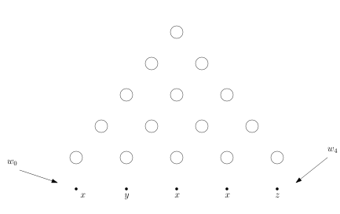
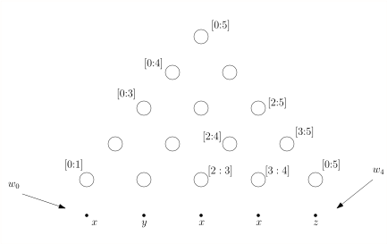
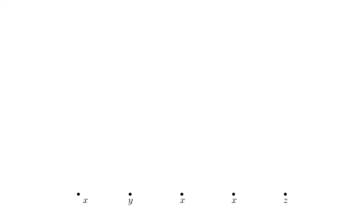
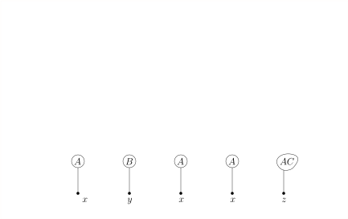
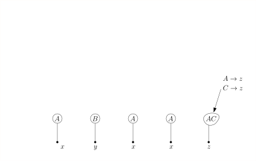
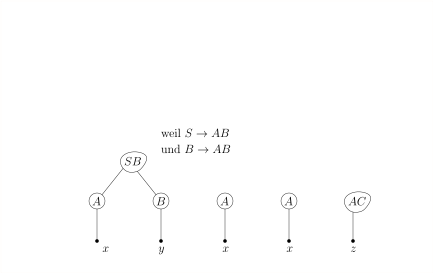
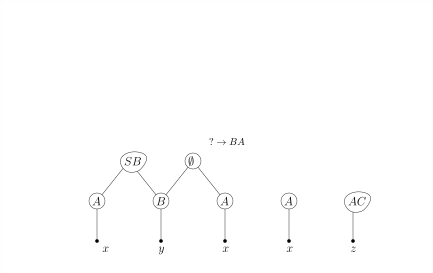
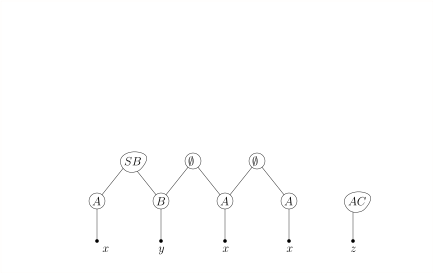
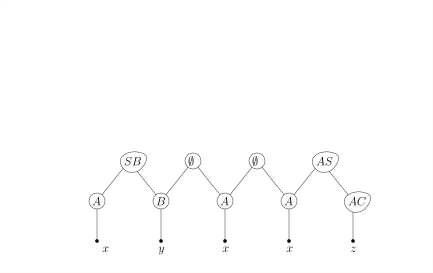
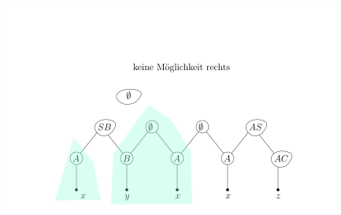
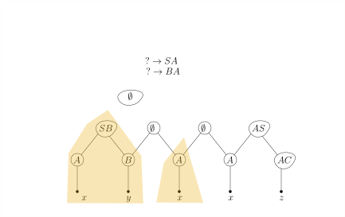
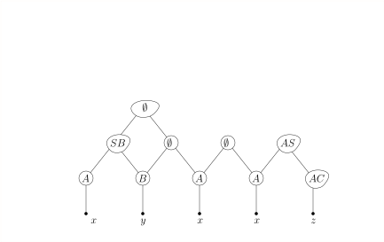
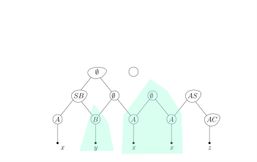
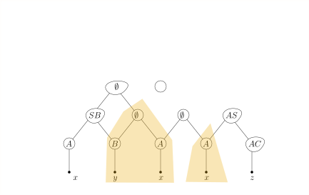
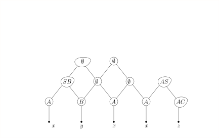
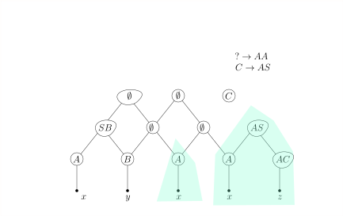
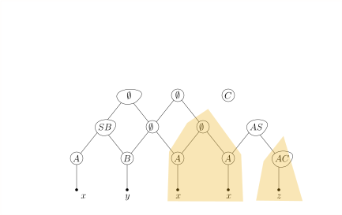
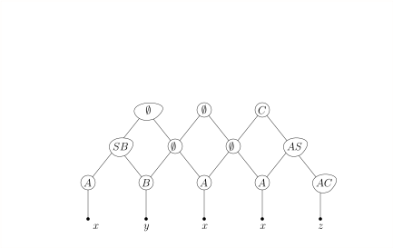
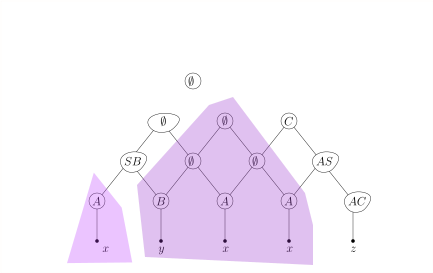
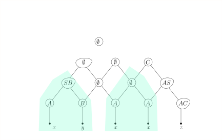
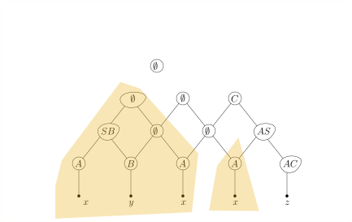
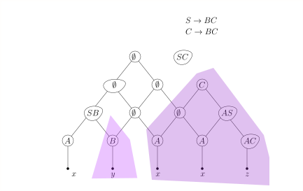
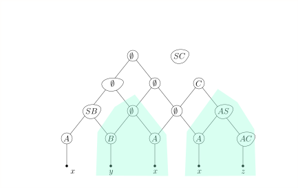
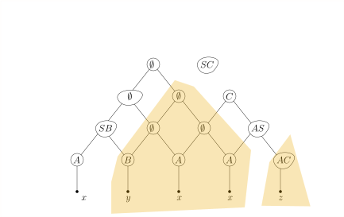
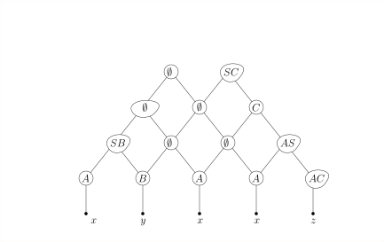
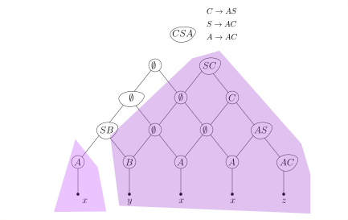
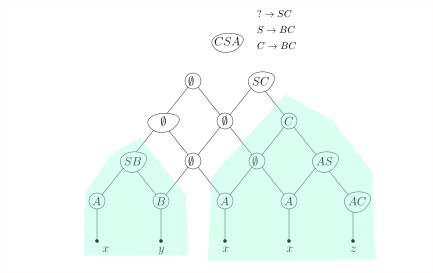
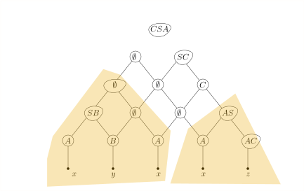
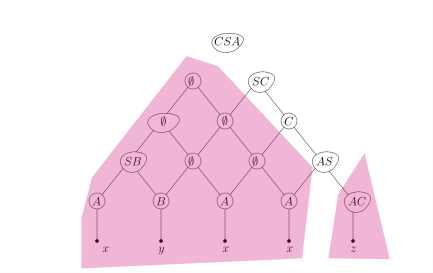
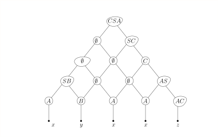
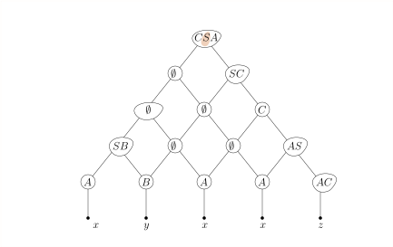
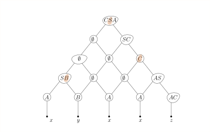
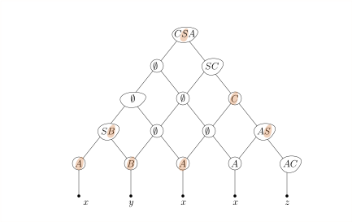
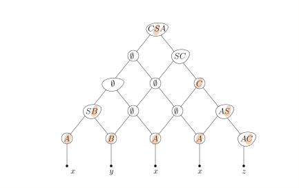
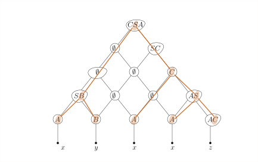
Wenn wir uns zusätzlich zu jedem $X \in N_{i,k}$ noch merken,
durch welche Regeln $X \rightarrow YZ$ es aufgenommen wurde und
für welches $j$ man $Y \in N_{i,j}, Z \in N_{j,k}$ hat, dann
können wir den Ableitungsbaum leicht rekonstruieren.